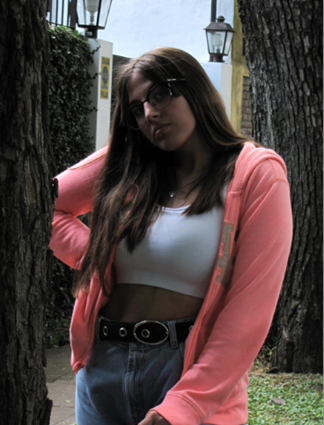

Victoria Pekerman
Mi nombre es Victoria Pekerman, tengo 15 años y soy de 3 de febrero, estudio en el secundario del Instituto Cardoso estoy en 4to año, los proyectos que hice en toda mi secundaria fueron:
- ONU
- Poder Legislativo
- Gente De Mente
- Olimpiadas de Historia
- Workshop de Ingles
Tengo conocimientos en los idiomas de inglés ya que fui de niña a un instituto y hoy en día me puedo manejar bastante bien con ese idioma, también sé un poco de Portugues ya que voy cada año a Brasil y con el tiempo vas aprendiendo algunas cosas básicas. Hago gimnasia artística en un club desde que tengo 10 años, me encanta, me parece un deporte súper entretenido, también en mi tiempo libre suelo leer o mirar series/películas.